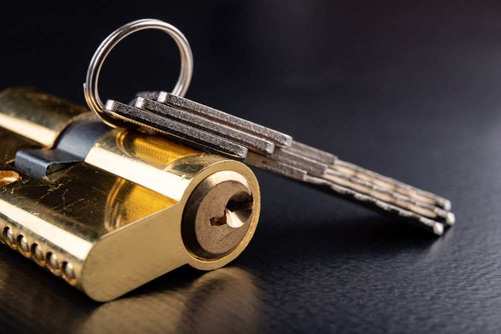
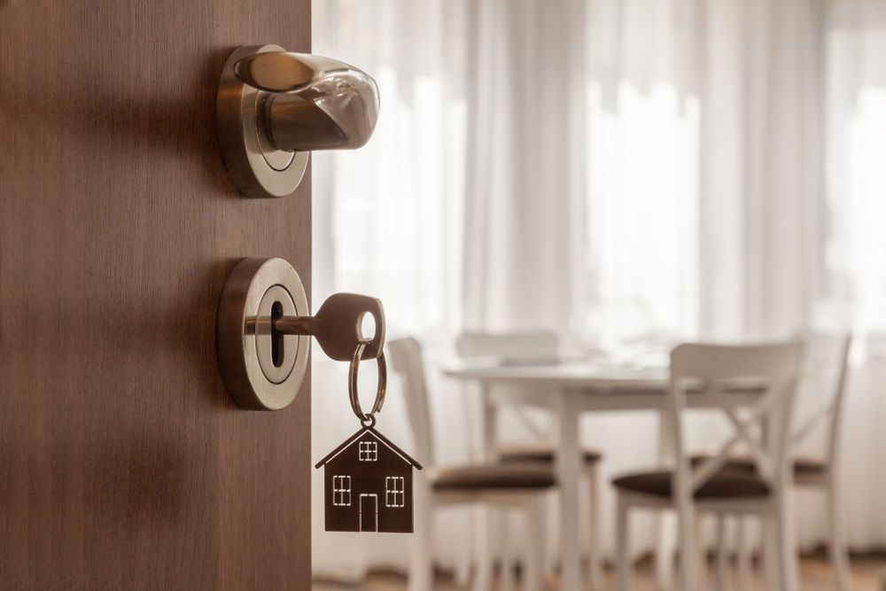

On this page
AT A GLANCE
At SPL Security Solutions, we take pride in offering a wide array of locksmith services in Robina, catering to homes, businesses and vehicle owners alike.
Get A Free Quote Now!
Thank you for contacting SPL Security Solutions.
We will be in touch soon.

Modern Solutions for Access & Security
At SPL Security Solutions, we take pride in offering a wide array of locksmith services in Robina, catering to homes, businesses and vehicle owners alike. Our services are not only about providing security solutions; they're about instilling a sense of safety and peace of mind among our clients.
For homeowners, we offer an extensive range of options from high-security lock installations to emergency lockout services. Businesses can benefit from our custom security assessments, designed to identify specific vulnerabilities and offer tailored solutions that incorporate the latest in security technology. And for car owners, we provide automotive locksmith services which include car key replacement, lock repair and emergency vehicle access. Our team is always ready to respond to your needs with the utmost efficiency and professionalism.
For more information on our comprehensive range of locksmith services, call (07) 5588 8111.
Robina homeowners can enjoy enhanced security with our residential locksmith services. We offer expert lock installations, repairs and rekeying, along with convenient key duplication. Locked out? Our 24/7 emergency service will have you back inside your home in no time with minimal fuss. Why take any chances? Trust our team to keep you safe and secure.
Our commercial locksmith services are designed to protect businesses in Robina with reliable and efficient security measures. We install advanced high-security locks, master key systems and access control solutions, giving business owners control over who has access to their property. Our team also offers emergency assistance and can conduct security assessments for added peace of mind.
Drivers in Robina experiencing car lockouts or key issues need look no further. Our automotive locksmith services in Robina are designed to offer efficient and professional assistance. Whether it's key replacement, duplication or transponder key programming you require, our team is well-equipped to handle your needs. For those unexpected moments, our 24/7 emergency assistance is also at your disposal.
In Robina, our advanced restricted key systems are specifically implemented to thwart unauthorised key duplication, ensuring access to designated areas remains tightly controlled. By using proprietary designs, these systems effectively grant entry only to those with express permission, providing a high level of security for businesses and organisations in Robina.
Protect your confidential documents, valuables and takings with our high-security safes in Robina. Our services extend beyond just installation; we also provide maintenance and emergency unlocking assistance. With different sizes and locking mechanisms available, we offer a comprehensive range of safes to meet specific security needs for both personal and business purposes.
Our integrated security systems in Robina offer advanced technology and features to protect your property against theft and other threats. Our solutions include CCTV cameras, alarm systems, access control and intercoms for comprehensive surveillance and monitoring capabilities. We can help you choose the most effective combination of products to meet your specific security needs and budget.
Our lock hardware solutions in Robina range from heavy-duty mortice locks to sophisticated electronic locking systems. Designed to offer reliability and long-lasting performance, these locks suit a wide variety of needs.
In Robina, we offer door hardware such as adjustable hinges, decorative pull handles and pneumatic closers. These components are ideal for both high-traffic areas and quieter residential settings.
Our expertly designed door hardware selection includes durable fire-rated options, efficient closers, and elegant handles, catering to traditional and contemporary styles in Robina.
24/7 Emergency Locksmith Services
Emergencies can happen at any time. To reflect this, our team at SPL Security Solutions is always ready to assist residents of Robina and surrounding areas. Our 24/7 emergency locksmith services are there to help with lockouts, key replacements and more. No matter the time of day or night, our team will arrive promptly to provide the professional solutions you need when you need them.
In the case of a break-in, our team can assess your property for any damage and provide necessary repairs or replacements to secure your entry points. Our mobile vans are equipped with the latest tools and technology, allowing us to provide on the spot lock replacements, rekeying and more.

Contact Details
24/7 Emergency Locksmiths or Security Tech


Trading Hours
Retail Shop

Frequently Asked Questions
-
Can locksmiths make keys for any type of lock?
Locksmiths can generally create keys for a wide range of locks including residential, commercial, vehicle and safe locks. However, the ability to generate a new key depends on the lock's complexity and the locksmith's equipment and expertise.
-
What are the signs my lock needs replacing?
If your lock is hard to turn, doesn’t lock properly or shows visible signs of wear and tampering, it may need replacing. Upgrading to a lock with advanced security features is also recommended if your current lock is outdated.
Locksmith & Security Solutions Gold Coast, Brisbane & Northern NSW